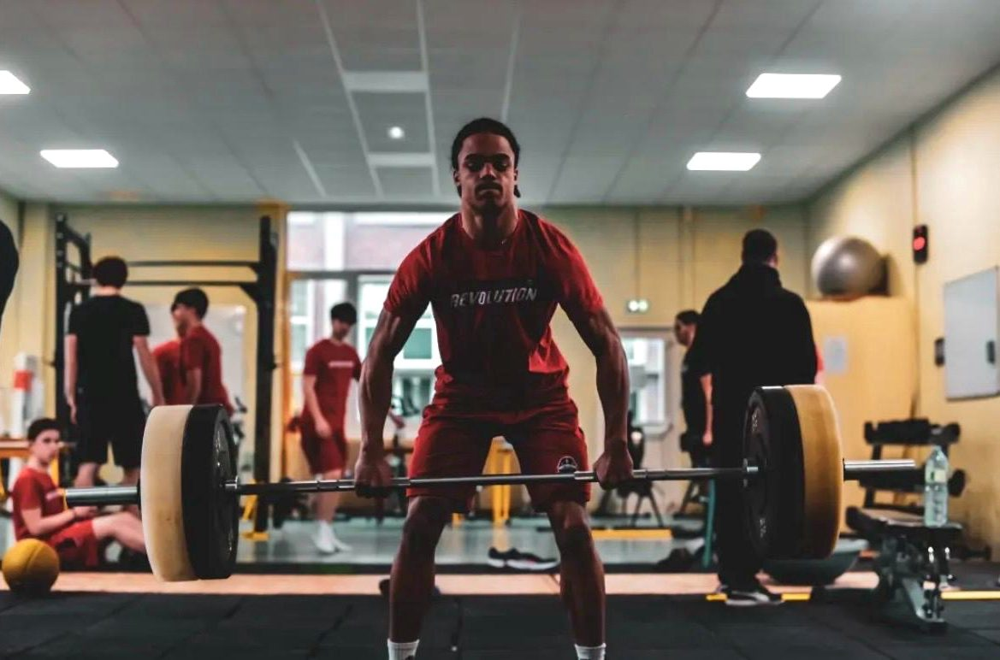
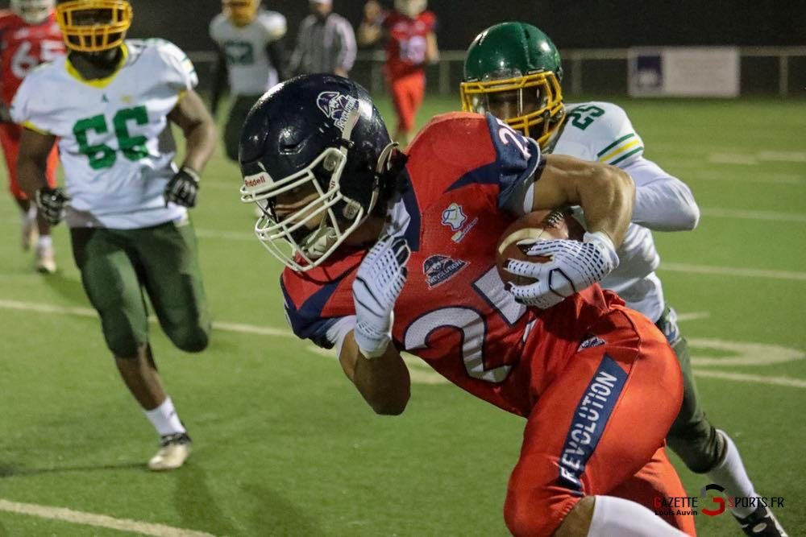
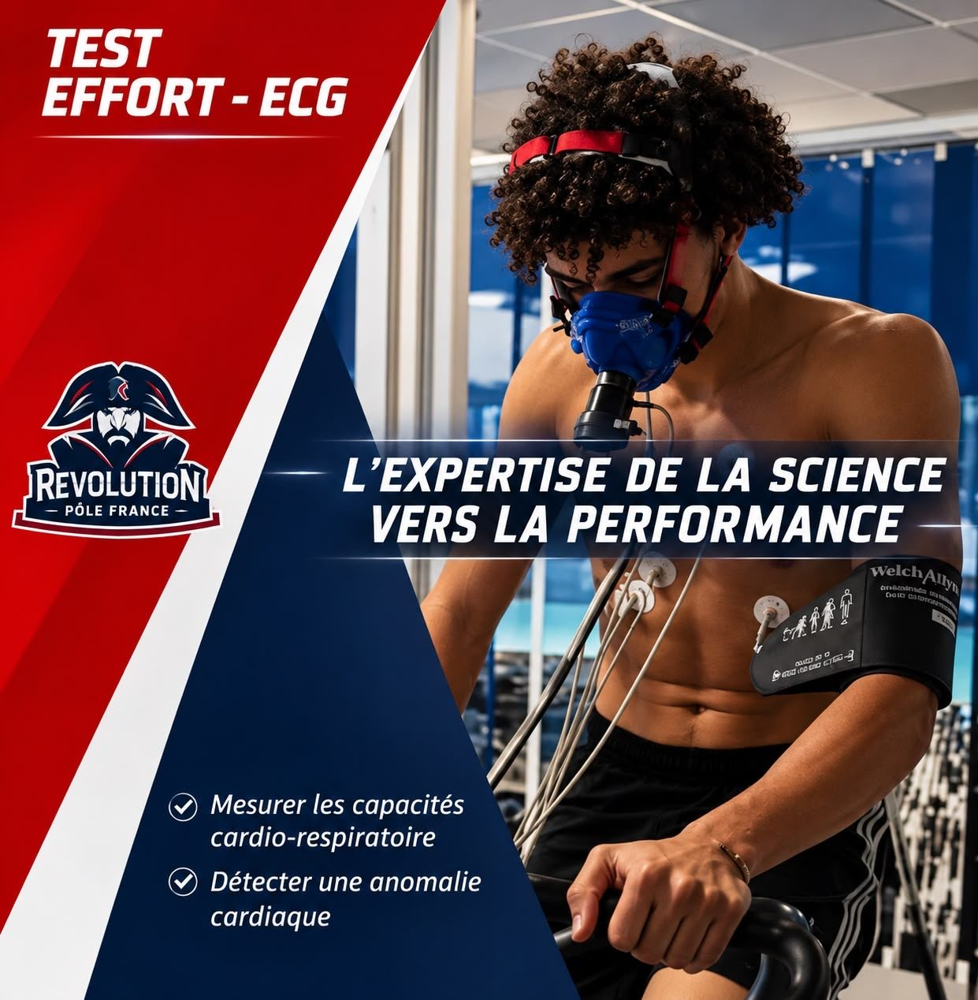
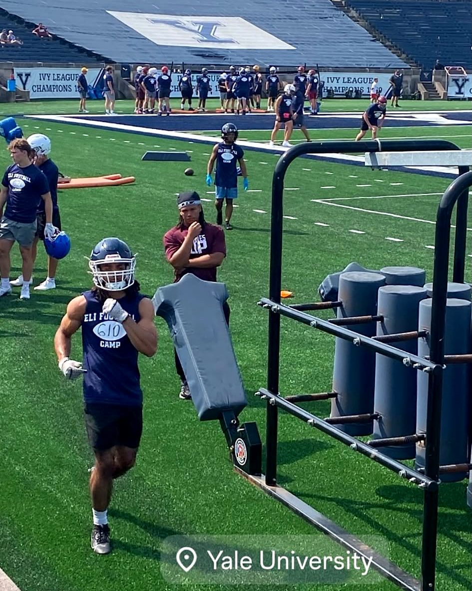
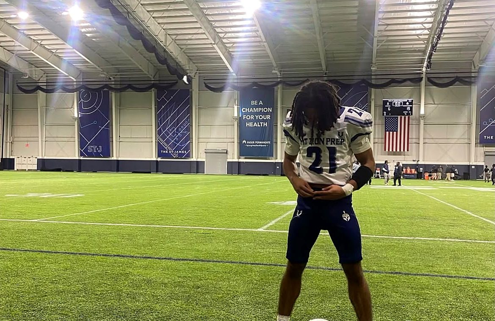
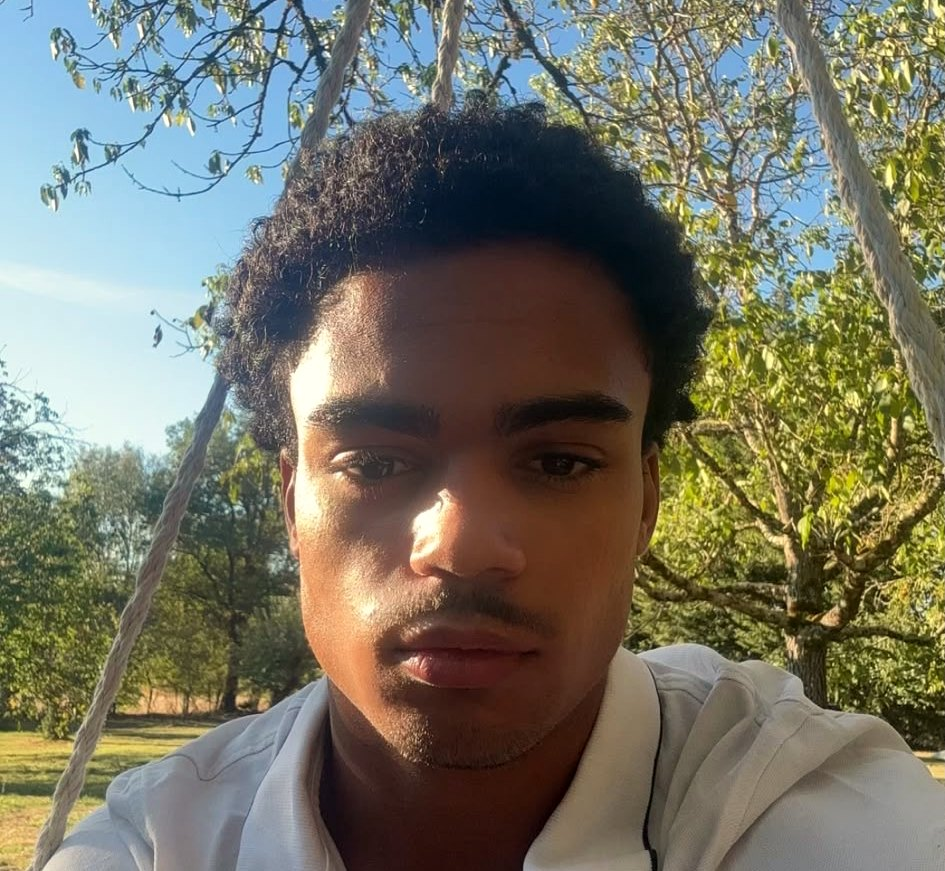
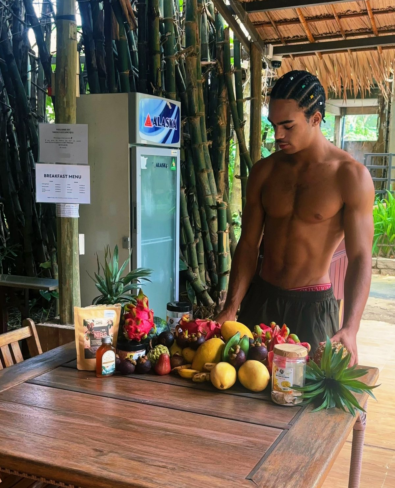
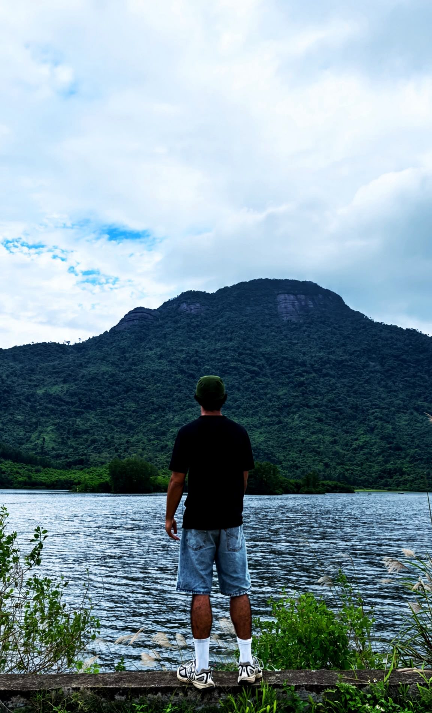

Kenji Behary
From elite athletic performance to the pursuit of true health.
An athlete’s journey. A personal turning point. A new vision of human health.
There was a time when Kenji Behary believed the limits of the human body were there to be broken.

Inside the science of human performance



The ambition was clear: Kenji wanted to reach the highest level of football.
But the most important lesson of his career was still ahead.
When the body says enough

He remembers asking himself:
From chasing performance to understanding health


Today, as a former high-level American football athlete, Kenji travels the world in pursuit of knowledge, exploring health, human biology and human nature.
And the experience that once seemed like the end of his athletic career became the beginning of something much bigger.
Reconnecting with our innate human nature — through movement, nutrition, physical health, discipline, habits, self-awareness, our own instinct and intuition, and a deeper connection with nature.